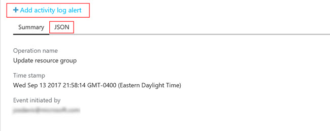
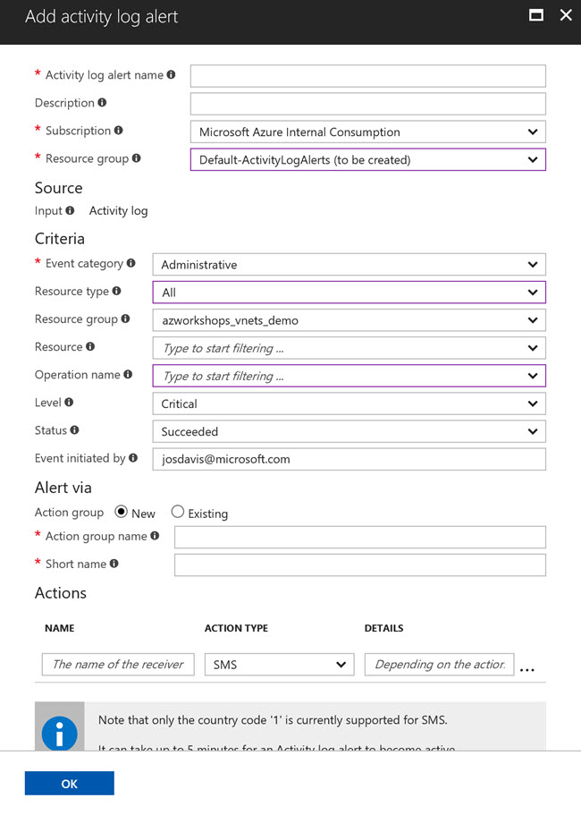

Activity Log
Overview
Let's take some time to explore how to query the history and events within our Resource Group.
Activity Log
Once you've created a Resource Group or you click on a Resource Group, the first tab Overview is selected. Of course, there's no resources created yet. We'll create some momentarily. For now, in the left panel, click on Activity log  .
.
The Activity Log gives you a report of all events within your Resource Group. At the top of the query window, you'll see various options to customize your query. Additionally, you can choose to save frequent search parameters.

There's, of course, not much to see here are this time. But, as we complete this workshop, you can revisit this blade periodically to see the changes to your Resource Group.
Exploring the Log
By default, the query looks at all events in the past 6 hours. You should see an operation entitled Update resource group referring to the creation of the Resource Group. If you don't see this event, try increasing the Timespan and click Apply.
Once you see the event listed, go ahead and click on the first event, Update resource group.
Clicking on the event will reveal an information window at the bottom of the screen. The information window initially shows you the same basic information that the log table showed. However, there are two other features exposed by this window.
Log Details
Clicking on the JSON "tab" will display the details of the log entry in a JSON format. Looking through this JSON object, you can find a vast amount of different information regarding the event. Such information includes the action performed, the person performing the action, originating IP address, log level, resource type(s), resource location(s), and subscription Id. All of this information can be used to create automated alerts in Azure.
Alerts
The second feature of the details window enables you to create alerts around specific events. In the details window, clicking on Add activity log alert will open a new blade to create an alert.
Let's create an informational alert.
In the alert blade, enter the following information:
-
Basics
- Activity log alert name: VNet Info Alert
- Description: Informational alert for resource group
- Subscription: <choose your subscription>
- Resource group: <accept the default> (this will create a new resource group for alerts)
-
Source
- Input: <Activity log>
-
Criteria
- Event category: Administrative
- Resource type: All
- Resource group: <azworkshops_vnets_demo>
- Resource: All
- Operation name: All
- Level: All
- Status: All
- Event initiated by: <accept the default>
-
Alert via
- Action group: New
- Action group name: Information Alerts
- Short name: info (include the greater and less than signs)
-
Actions
Here, add two actions - one for your email address and another for your mobile phone (SMS).IMPORTANT: The name of the receiver must by unique. Therefore, for your emaill address and SMS, name the receiver with a differentiator (e.g. "John Doe - Email", "John Doe - SMS").
Notice that you can also specify a Webhook (URL) if you want to automate a notification or ticket in your support application, such as ServiceNow.
-
Click OK.
It should only take a couple of seconds to create the Resource Group (if necessary) and create/update the Action Group. Once the process has completed you should receive a text (SMS) message and an email - provided that you set up both actions - alerting you that you've been added to the Action Group.
Powershell/CLI
Before we move forward in looking at the other options of our Resource Group, let's interact with the Activity Logs just a bit more. This time we'll query the logs using Powershell and/or the CLI. As a reminder, most people use Powershell in a Windows environment and the CLI in Linux-based environment, but either can be used on any environment.
Both of the following sections are the same. Simply use the environment with which you feel most comfortable.
Powershell
-
From your prompt connect to Azure:
login-azurermaccount -
Make sure you are "attached" to the correct subscription. If you only have one subscription, it will automatically be chosen for you. However, if you have more than one subscription, then the incorrect one may have been chosen by default.
-
List all subscriptions:
get-azurermsubscription | select -Property SubscriptionName -
Set the active subscription:
select-azurermsubscription -SubscriptionName "<your subscription name>"
-
-
Let's get all of the log entries for our Resource Group:
get-azurermlog -ResourceGroup azworkshops_vnets_demoYou should see a couple of entries here, if nothing else, regarding the creation of the Resource Group.
-
Now, let's get all of the log entries where the Status is succeeded:
get-azurermlog -ResourceGroup azworkshops_vnets_demo -Status SucceededThis is helpful when you want to query any log entries where an operation may have failed.
-
You can also specify a date range and a person who performed the action:
get-azurermlog -ResourceGroup azworkshops_vnets_demo -StartTime (Get-Date).AddDays(-14) -Caller <your email address>This queries all actions performed in the last two weeks by you. If you want to specify a right boundary on your time frame, then you can use the
EndTimeparameter. -
Finally, to display all of the JSON-formatted details that you saw earlier in the details window, add the
DetailedOutputparameter:Get-AzureRmLog -ResourceGroup azworkshops_vnets_demo -Status Succeeded -DetailedOutput
CLI
-
From your prompt connect to Azure:
azure loginYou will need to visit
https://aka.ms/deviceloginand enter the code that the CLI gives you. -
Make sure you are "attached" to the correct subscription. If you only have one subscription, it will automatically be chosen for you. However, if you have more than one subscription, then the incorrect one may have been chosen by default.
-
List all subscriptions:
azure account list | awk -F' {2,}' '{print $2}'(NOTE: You can simply issue the
azure account listcommand to show all subscriptions and other details. However, in a Linux-based environment, the above command will strip out all of the other information and show the subscription names only.) -
Set the active subscription:
azure account set "<your subscription name>"
-
-
Let's get all of the log entries for our Resource Group:
azure group log show azworkshops_vnets_demo -aYou should see a couple of entries here, if nothing else, regarding the creation of the Resource Group.
(NOTE: The
-aparameter for "all" entries is optional. However, remember from above that, by default, only the past 6 hours are queried from the log. So, if you want anything beyond that, you'll need to specify this parameter.) -
Now, let's get all of the log entries where the Status is succeeded. The CLI doesn't have a querying option, so we'll need to convert the output to JSON then filter that output using
jq. The Status is a property of the objects returned from the Azure Insight SDK. The Status property has a property of its own called Value. For accessing these properties and filter by them, we'll use 'dot' notation:azure group log show azworkshops_vnets_demo -a --json | jq '.[] | select(.status.value == "Succeeded")'The command takes all of our returned data and, using
jq, converts it to a JSON array of objects, then filters and displays only objects whose property Status.Value equals "Succeeded". This is helpful when you want to query any log entries where an operation may have failed. -
You can also filter by date range and a person who performed the action:
azure group log show azworkshops_vnets_demo -a --json | jq --arg startTime $(date --date="14 days ago" -Is) '.[] | select(.eventTimestamp > $startTime and .caller == "<your email address>")'This queries all actions performed in the last two weeks by you. Looking at this, what we're doing is passing an argument
startTimein tojq. The value ofstartTimeis calculated by running a nested command$(date --date="14 days ago" -Is). That value is then used byjqto compare to theeventTimestampproperty of our returned log entries.If you want to specify a right boundary on your time frame, then you can create an additional argument and condition.
(NOTE: Mac's do not support the
--dateor-Iparameter. Instead, your nested command should be$(date -v-14d +%Y-%m-%dT%H:%M:%S%z)where the-vsubtracts 14 days and the output is formatted.)
Wow! That was a lot of interaction with our Activity Logs. However, understanding how to use Activity Logs is extremely beneficial for many reasons. Those logs can later be audited, piped, or used for reporting in platforms such as Operations Management Suite (OMS). While this may have seemed like a lot of work, it will get easier over time and it's highly recommended that you continue to practice with the logs and become familiar with them.